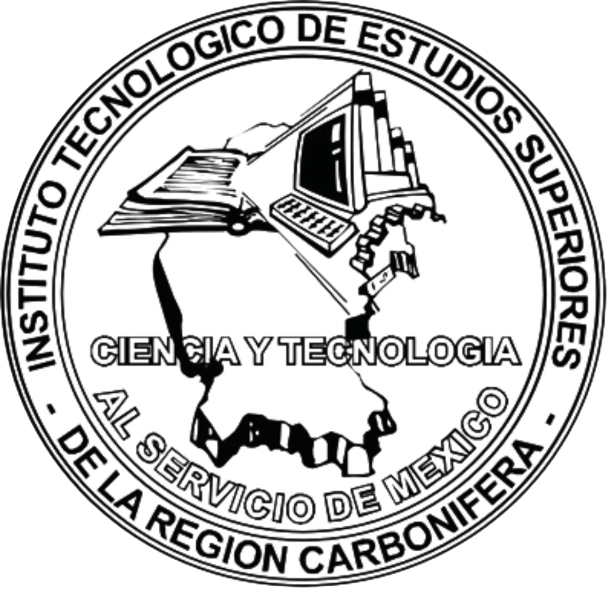
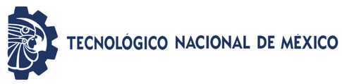
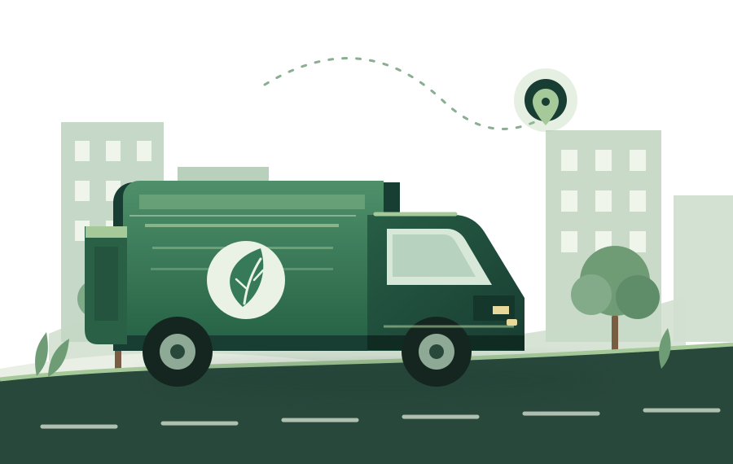

Seguimiento
UBICACIÓNConsulta en el mapa la ubicación disponible del camión recolector.


TECNOLOGÍA PARA LA CIUDAD
Consulta dónde se encuentra el camión recolector y accede a la información del servicio desde un solo lugar.

EL PROYECTO
RECOLECTA+ acerca información sobre el recorrido del camión recolector a través de una plataforma digital de consulta ciudadana.
Consulta en el mapa la ubicación disponible del camión recolector.
Facilita el acceso a información del servicio desde una página web.
Integra geolocalización, conectividad y visualización de datos.
TECNOLOGÍA CON PROPÓSITO
Al facilitar la consulta de la ubicación del camión, RECOLECTA+ busca apoyar la organización del servicio y acercar la información a la comunidad. Una recolección mejor coordinada puede favorecer el manejo responsable de los residuos.
Explorar el mapa